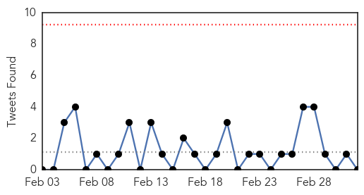

30 Day Trends
Web: 1 alerts, 0 warnings
Twitter: 0 alerts, 0 warnings
Top Articles:
- 0.999
- MERS Is Not A Global Public Health Emergency, WHO Says
- 0.980
- Typhoid always lurking in Kampala slums
- 0.976
- what is Ross River virus and how is it treated?
- 0.968
- More salmonella cases at aged care facilities emerge
- 0.967
- Ministry of Health Monitoring Chickenpox Surge in Schools
- 0.954
- Boston Pilgrim wards remain closed after norovirus outbreak
- 0.952
- RESU provides medicine, checks typhoid-hit town
- 0.952
- Four Patients At Cedars-Sinai Infected With 'Superbug' - Story
- 0.943
- Norovirus outbreak improving at Boston Pilgrim Hospital
- 0.938
- Neville urges Minister for Health to take action on Lyme disease
- 0.917
- Chicago Tribune
- 0.917
- Chicago Tribune
- 0.917
- Chicago Tribune
- 0.917
- Chicago Tribune
- 0.917
- Chicago Tribune
- 0.917
- Chicago Tribune
- 0.917
- Chicago Tribune
- 0.917
- Chicago Tribune
- 0.917
- Chicago Tribune
- 0.917
- Chicago Tribune
- 0.917
- Chicago Tribune
- 0.917
- Chicago Tribune
- 0.917
- Chicago Tribune
- 0.917
- Chicago Tribune
- 0.917
- Chicago Tribune
- 0.917
- Chicago Tribune
- 0.917
- Chicago Tribune
- 0.917
- Chicago Tribune
- 0.917
- Chicago Tribune
- 0.917
- Chicago Tribune
- 0.917
- Chicago Tribune
- 0.907
- Scarlet Fever cases double in the West this as health chiefs express concern
- 0.853
- If you had chickenpox, watch out for shingles
- 0.851
- Comisadas case trinta toneladas de folla de coca en Bolivia
- 0.806
- Commissie boekt vooruitgang met Europese migratieagenda
- 0.781
- Portland Health Officials Wary Of Increasing Number Of Syphilis Cases
- 0.745
- HIV/Aids complicates fight against kala-azar
- 0.744
- Rare salmonella strain found in Betta Maid sample
- 0.736
- Fifth Monkey exposed to Deadly Bacteria
- 0.733
- Bacteria suspected in death of St. Charles County mom and son
- 0.733
- Doctor shortage, broken phones cripple Katima hospital
- 0.710
- Students, Staff At Roosevelt High School Exposed To Active Tuberculosis « CBS Los Angeles
- 0.709
- Townsville high school student in hospital with tuberculosis (TB)
- 0.704
- Queensland principals' food poisoning outbreak now affects 250
- 0.701
- Fifth monkey has signs of deadly bacteria in lab mishap
- 0.698
- Superbug outbreak extends to Cedars-Sinai hospital, linked to scope
- 0.686
- mndaily.com - The Minnesota Daily
- 0.670
- FBC News
- 0.667
- Ukraine: Our medics reach more people in dire humanitarian situation - photo essay
- 0.657
- Impact of Water, Sanitation & Hygiene
Showing top 50 articles...
Top Tweets:
-
No tweets found for Mar 04, 2015
Web/News Articles

Tweets
Article Locations

Article Confidences